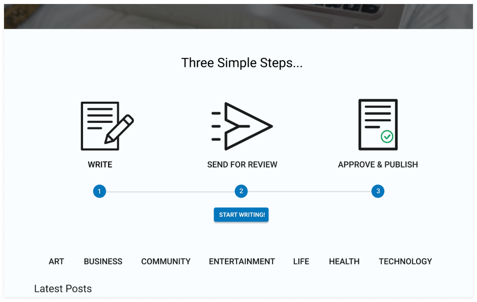
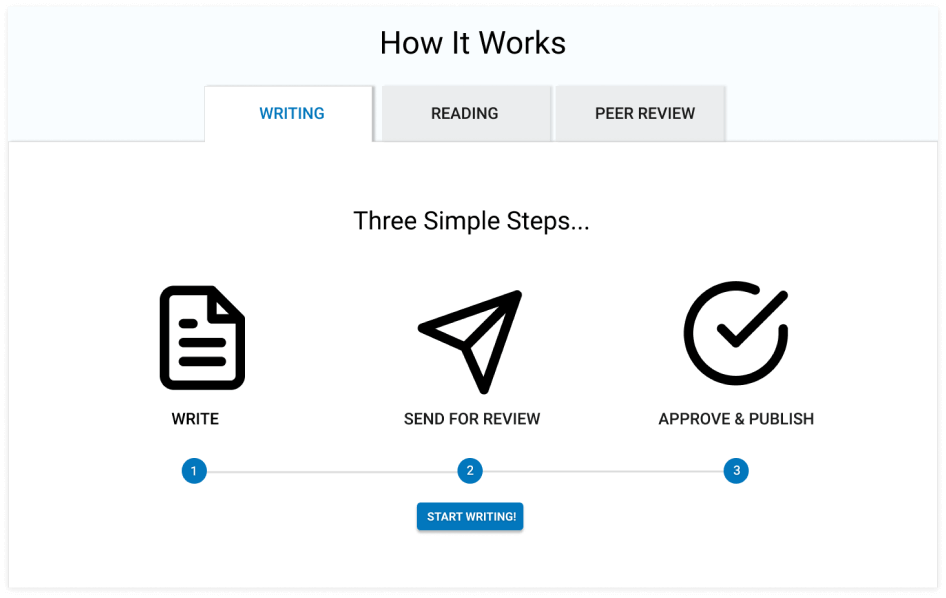

SUMMARY
Many writers are faced with the problem of the same people reviewing and editing. Collab gives writers the opportunity to collaborate with other writers and editors and also acts as a blog spot to post their work.
ROLE
UX Design | Visual Design | Brand & Identity
PROBLEM
Users are in need of a place that they can collaborate with others, create, save and organize content.
SOLUTION
An application that focuses on a niche market in the writing world. This application allows users to create new content, and receive feedback from others to help improve their writings while also allowing a space for writers to post their work for readers.

SURVEY RESULTS
70% of users are interested in written content over videos,
pictures, audio, etc.
70% of bloggers use categories to organize and 60%
use tags.
50% of bloggers are in need of editors.
At this point in
the process I wasn’t completely sure where I was heading with this project. It was difficult
for me to form a survey when I wasn’t sure what I was looking for. I knew I wanted to create something for
writers, and what I found from the survey is there were many bloggers who required assistance from editors.
I
decided to design an application that is a combination of Google Drive, Pinterest, and Medium.
COMPETITIVE ANALYSIS
GOOGLE DRIVE
- No niche market
- Easy to navigate
- Monopoly on the market

- They own the market on visual bookmarking
- Room for competition
BOOKTYPE
- Smaller company
- Niche market focusing on book authors
- Site is hard to use
Focusing on the best features of these sites I was able to create Collab. The features I focused on were: Pinterest’s visual organization, Google’s easy navigation, a visually appealing site, and a wide variety of features while targeting a more specific market as BookType does.
PERSONAS
Based on the survey and the problems that we are wanting to solve I created three different personas: an author, editor, and reader.

DAVID SMITH
Age: 55 | Location: SLC, UT | Occupation: Dietician | Gender: Male
- Pain Points:
- Finding followers/Clientele
- Collaborating with editors
- Communicating with readers
Motivations:
David started a blog to help others with their health journey.
He grew up with many health problems and figured out how to help heal himself through diet, and this led to
a life changing career to help
others do the same.

ANGELINE WILLIAMS
Age: 40 | Location: LA, CA | Occupation: Blog Editor | Gender: Female
- Pain Points:
- Collaborating with bloggers
- Working with difficult software
- Communicating with authors
Motivations:
Angeline does freelance work so that she is able to work from
home and be available to her children. She edits because she loves reading and learning so much. This helps
her stay open minded to the
possibilities of the world.

MARIA MARTINEZ
Age: 27 | Location: Pocatello, ID | Occupation: Photographer | Gender: Female
- Pain Points:
- Finding interesting content
- Understanding content
- Saving content
Motivations:
Maria is motivated by other peoples expieriences. She is always
looking to improve
herself.
She likes using new and improved software because she feels like it helps the world progress as a whole.
USER STORIES
High Priority Stories
- All users want to create an account
- As an author I want to create new posts
- As an editor I want to edit a post
- As a reader I want to view a post
These are a few of the high priority stories that I included to be apart of the MVP.
USER FLOWS
Based on the information I gathered for my user stories I created user flows for how users will interact with the product and accomplish the goals.
WIREFRAMES & USER TESTING
After I created wireframes on paper, I created low fidelity wireframes in Figma and created a clickable prototype. I realized that I was missing a few screens such as the confirmation messages. After I had added what I thought was needed I tested three users. I asked all three users to do certain tasks. These tasks were logging in, creating a post, reading a post, organizing content, and to comment on the posts. The users didn't have trouble logging in, creating or reading. But commenting and organizing was a struggle. After users created their posts they struggled with being able to go back to find their posts.
BRANDING
LOGO DESIGN

I drew out a mind map to help work through my thought process, and decided on using a dolphin for the logo because they are a collaborative, social animal.
STYLING
I wanted the site to be intuitive and easy to understand. The colors that I chose are green and blue to help represent wisdom, stability, nurturing, growth and change. I chose the Roboto font because it was modern and easy to read.
PALETTE
FONT
Aa
Font Family:
Roboto Font
Styles:
Regular
Italic
Bold
Bold Italic
HI-FI USER TESTING
Taking what I learned from my user testing on the low-fidelity mockups I created the high fidelity wireframes with the branding. I had a problem that was similar to the first round of testing. The site was fairly easy to navigate for users and they had no trouble signing up, creating, editing and reading the content. The problem that I faced again though were users were confused about what the site was for and why they would want to use this. I was able to take this information and eventually ended with a “How it Works” section to clearly label what users were confused about.
BEFORE
AFTER
CONCLUSION
The start of the project was rough. Because I wasn’t sure what I was making and this led to me not feeling confident about the direction of the project. I didn’t begin to have a feel for what I was creating until I started creating the wireframes. This is when I began to have a visual and focused path for the project. As soon as I knew the direction I needed to take, the project was smooth sailing. If I had more time I would have liked to do more testing on the high-fi prototype. I would also like to continue working on the visual aspects. Visual is not a strong point of mine, and I know it could use some work. I would also like to work on the branding more; specifically the logo. I’m not completely happy with how it turned out, and I would even consider going with a completely different logo. Sketching out the different logo ideas is what helped me come up with what I have, and I would have liked to continue working through that thought process given more time.